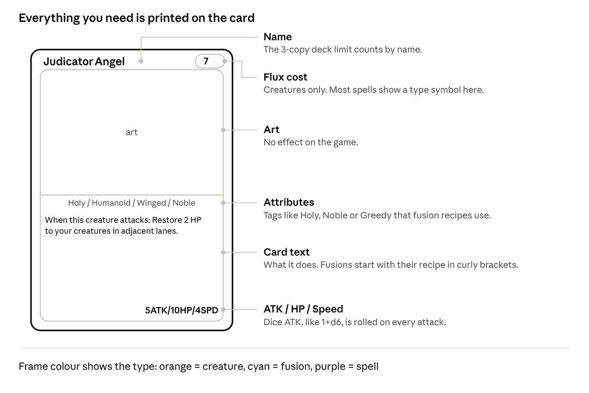
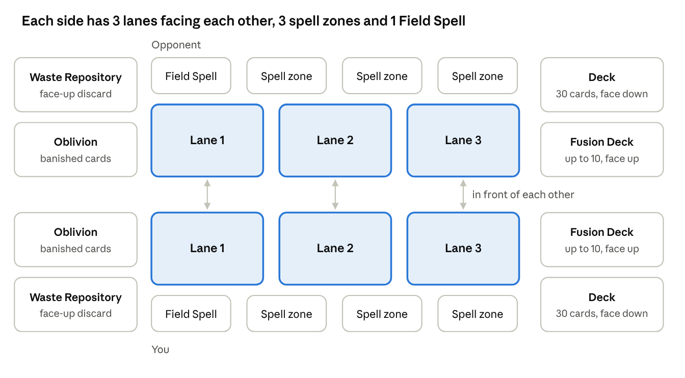
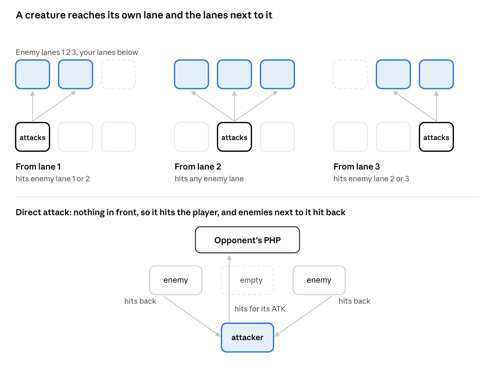
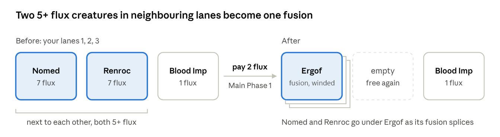

Reality is FUCKED fractured.
A massive multiversal collapse kicked off by a bunch of Reactor Meltdowns turned reality into total chaos. Angels and Blood Demons are real now. Goblins are stealing my fucking gold and some fuck ass dinosaurs strolled out of the past, and for some reason Gregg and his extended family are here too... What the fuck, Gregg?
When anything in this book seems to clash, these three settle it.
Each player starts with 30 PHP (Player Health Points). Get your opponent to 0 PHP and you win.
Your PHP drops when:
If both players hit 0 PHP at the same time, the game is a draw.
Every card is a tiny contract with reality. The frame colour tells you what it is, so cards don't print their type.

A creature card: 6 parts
Your side mirrors your opponent's, and your 3 lanes line up with theirs.

The table: both sides
Zone | What it is |
|---|---|
Lanes (3) | Your creature zone. One creature or fusion per lane, so max 3. |
Spell zones (3) | Every Spell and Instant is played into an empty spell zone, then leaves when it resolves. Continuous Spells stay. All 3 full = no more spells until one clears. |
Field Spell zone (1) | Your Field Spell. 1 per player. |
Deck | Your 30-card Main Deck, face down. |
Fusion Deck | Your fusions, face up. Anyone can look through it. |
Waste Repository | Your face-up discard pile. Used, destroyed and discarded cards go here. |
Oblivion | Face up. Banished cards and cards fed to the reactor go here and never come back unless a card says so. |
Hidden and public. Your hand and your deck are hidden; everything else is public. Hand size is public too: if your opponent asks how many cards you hold, tell them. Ask before touching the other player's cards.
Where things are.
Going first vs second. The first player skips their first draw and nobody attacks on the first turn of the game. The second player gets +1 flux on their first turn (4 instead of 3).
Flux is what you spend to materialize and fuse creatures. Spells are free.
Your turn | 1 | 2 | 3 | 4 | 5 | 6 | 7 | 8+ |
|---|---|---|---|---|---|---|---|---|
Max flux | 3 (4 if second) | 4 | 5 | 6 | 7 | 8 | 9 | 10 |
Seven phases, in this order, every turn. Say each one out loud as you go.
# | Phase | What happens |
|---|---|---|
1 | Draw | Draw 1 card. The first player skips this on their first turn. |
2 | Reactor | Max flux +1 (not on your first turn), then refill your flux. You may also Feed (a card from your hand to Oblivion: +1 flux this turn) or Skip (no +1 max flux, draw 1 extra card). |
3 | Start | Radiance bonuses from your last turn end, then resolve start-of-turn effects. |
4 | Main 1 | In any order: materialize creatures, play spells, use effects. One fusion (section 14). |
5 | Battle | Attack (section 13). Nobody attacks on the first turn of the game, and fusions made this turn can't attack. |
6 | Main 2 | Play spells and use effects. No materializing from your hand and no fusing. |
7 | End | End-of-turn effects, then discard down to 8 cards. |
From your hand (natural materialize). Only in Main Phase 1. Pay the creature's flux cost, then put it in any empty lane. You can materialize as many as you can pay for and fit. Some creatures let you pay PHP to reduce their flux cost (Blood Price, section 15).
By an effect (Carrion The Dark Duchess, Claw Machine and so on). It happens whenever the effect says, even outside Main Phase 1, and you don't pay flux. It still needs an empty lane: no room, no creature.
Either way:
Spells cost no flux. Every spell is played into an empty spell zone (you have 3); a Field Spell goes in your Field Spell zone.
Symbol | Type | When you can play it | What it affects | Where it goes after |
|---|---|---|---|---|
No symbol | Spell | Your Main Phases only. Never in response. | What its text says | Resolves, then your Waste Repository |
Instant Spell | Your Main Phases, on your opponent's turn, during combat, or in response to any card or effect | What its text says | Resolves, then your Waste Repository | |
Continuous Spell | Your Main Phases | You: your side of the field | Stays in its spell zone until something removes it | |
Field Spell | Your Main Phases | Everything on the field, both sides | Stays in your Field Spell zone. 1 per player: a new one sends your old one to the Waste Repository |
The symbol in a spell's top-right corner shows its type: a lightning bolt for Instant Spells, a circle of arrows for Continuous Spells and a mountain for Field Spells. A normal Spell has no symbol.
Chains. Whenever a card or effect is played or used, the other player may respond with an Instant. Then the first player may respond to that, and so on. When both players pass in a row, everything resolves newest first.
Example: you play Spell A. Your opponent responds with Instant B. You respond with Instant C. Both pass. C resolves first, then B, then A.
Creature effects. Activated effects (a cost and a colon, "You may ...", or "You can only use this effect of ... once per turn") are used in your Main Phases unless the card says otherwise. "When...", "Whenever..." and "At the end of..." effects happen whenever they trigger.
Destroying a spell as it's played. Pipebomb can be played in response to a spell (a chain). That spell does nothing and goes to its owner's Waste Repository. It was still played, so it still counts for Spellcount.
Face-down spells. Like in Yu-Gi-Oh!, in your Main Phase you may set a Spell, Instant Spell or Continuous Spell from your hand face down in an empty spell zone instead of playing it (not a Field Spell). Your opponent only sees that a card is there. You can't play it the turn you set it, but from your opponent's next turn on you may flip it and play it whenever you could play an Instant: on your opponent's turn, during combat or in response to something, or in your own Main Phase. It counts as played when you flip it (Spellcount, "whenever you play a spell"), and its conditions and costs are checked then. Pipebomb can destroy a face-down spell before it's used.
Nothing heals on its own: damage stays until a card restores it.
Player health (PHP). You start at 30. Restoring can't take you above 30; gaining can.
Card says | What happens |
|---|---|
Restore PHP | Heals you, but never above 30, your starting PHP. |
Gain PHP | Adds PHP. Can take you above 30. |
Pay PHP | A cost. You can always pay it, even to 0, and then you lose. |
Lose PHP | Any drop in PHP: damage, paying, or "lose X PHP". Beelzechud and Beelzechad care about this. |
Creature health. HP is written current/max: a 3/5 creature has 3 HP left out of 5.
Card says | What happens | 1/3 creature, 3 HP |
|---|---|---|
Restore X HP | Heals current HP, never above max; Radiance turns the extra into a bonus (section 15). Max doesn't change. | becomes 3/3 |
Give X HP, or "+X HP" | Permanent. Raises current and max HP. | becomes 4/6 |
Permanently lose X HP | Lowers current and max HP. At 0 the creature is destroyed. | becomes 0/0, destroyed |
Damage | Lowers current HP. It stays. | becomes 0/3, destroyed |
Destroyed. A creature at 0 HP or less is destroyed and goes to its owner's Waste Repository. "Destroyed", "dies" and "killed" all mean the same. Sacrificing a creature destroys it as a cost.
Banished. The card goes to Oblivion. It isn't destroyed, so death effects don't trigger, and it never comes back unless a card says so.
Death effects trigger after the card reaches the Waste Repository. If several die at once, the player whose turn it is resolves theirs first, in the order they choose.
Prevent and reduce. Prevent stops damage, reduce lowers it. Damage reduced to 0 counts as no damage dealt, so nothing that triggers on taking damage fires.
The attacker picks the target, and speed decides who hits first. There's no blocking, but attacking leaves a creature winded (below).

Who can hit what: 3 lanes
Attacking, step by step.
Nobody attacks on the first turn of the game. Creatures can't attack the turn they're played, and fusions can't attack the turn they're made. They still hit back when attacked.
Winded. A creature that attacks is winded until the start of your next turn, and so is a fusion the turn it's made (section 14). Turn a winded creature sideways to show it, and stand it back up at the start of your next turn. A winded creature can't hit back when it's attacked. It still stands in its lane, so an enemy in front of it still can't attack you directly, and its effects still work. Attacking is a choice: the creature that hits now can't defend itself on your opponent's turn.
Winded on a direct attack. When an enemy attacks you directly from a lane next to a winded creature of yours, the winded creature still hits it back, but always last: after the attacker has hit you and after your other creatures have hit back, whatever its speed.
Speed runs from 1 to 8; 4 is normal.
Fight | Speed | Result |
|---|---|---|
Judicator Angel (6 ATK, 12 HP, Speed 7) attacks Carrion The Dark Duchess (3 ATK, 10 HP, Speed 3) | Judicator 7 vs Duchess 3: Judicator first | Duchess drops to 4/10 and hits back for 3. Judicator ends at 9/12. |
Vein Ripper (4 ATK, 4 HP, Speed 6) attacks Cherub (1 ATK, 2 HP, Speed 6) | Vein Ripper 6 vs Cherub 6: a tie, so the attacker, Vein Ripper, goes first | Cherub is destroyed and never hits back. Vein Ripper stays at 4/4. |
Vein Ripper (4 ATK, 4 HP, Speed 6) attacks Blood Imp (1 ATK, 2 HP, Speed 7) | Vein Ripper 6 vs Blood Imp 7: Blood Imp first | The Imp hits first for 1, then dies (Vein Ripper 3/4). Its death effect deals 2 either way. |
Judicator Angel attacks the player. In the lanes next to it: Beelzechud (5 ATK, Speed 5) and Blood Imp (1 ATK, Speed 7) | Judicator 7 vs 5 and 7: Judicator first (the Blood Imp ties, so it hits after) | The player takes 6. Then Judicator takes 5 + 1 and ends at 6/12. |
Fusions are the end goal: every fusion is built to be stronger than any creature you can materialize, and it frees up a lane.

Fusing Ergof: before and after
How to fuse.
Not allowed: two creatures in lanes 1 and 3 (they aren't next to each other), a fusion splice that costs less than 5 flux (unless Melting Pot says so), or a second fusion in the same turn.
The fusion keeps the damage. The fusion arrives at its own printed stats, minus all the damage its fusion splices had. If that damage is its HP or more, it's destroyed straight away.
Example: you fuse a creature at 4/5 HP (1 damage) and one at 5/10 HP (5 damage). The fusion normally has 26 HP, so it arrives at 20/26.
The fusion is winded. It has just arrived, so it can't attack until your next turn, and it's winded until then too: it can't hit back when it's attacked (section 13).
Ways around the 2 flux.
Card | Type | What it does |
|---|---|---|
It's Free Fuse-Estate | Spell | Fuse without paying the 2 flux |
Crimson Altar | Field Spell | Sacrifice another Unholy creature instead of paying the 2 flux |
Cheaper fusion splices.
Card | Type | What it does |
|---|---|---|
Melting Pot | Field Spell | Once per turn, banish a creature from your Waste Repository: your next fusion this turn may use a creature costing 3 or 4 flux as one of its fusion splices. Only its owner can use it |
Fusing from your hand. Shotgun Wedding (Spell) materializes a fusion from your Fusion Deck, its fusion splices taken from your field and your hand, with at least one from your field. They have to meet the recipe and the 5+ flux rule, but it isn't fusing: it doesn't cost the 2 flux and you can still fuse that turn. The fusion isn't winded and can attack straight away, just not your opponent directly. At the end of your turn it's destroyed, with its fusion splices. Only 1 Shotgun Wedding per turn.
Reading a recipe.
Recipe says | You need |
|---|---|
{Nomed The Dark Viscount + Renroc The Dark Marquis} | Those exact two cards |
{Chapel Guard + any Holy creature} | Chapel Guard, plus any creature with the Holy attribute |
{any 2 Greedy creatures} | Any two creatures with the Greedy attribute |
A creature with two matching attributes can fill either part: Hemogoblin is both Greedy and Unholy. Fusions have attributes too, so a fusion can fill an attribute part.
Fusion splices. Many fusions do something with the cards under them. Some effects count them ("for each fusion splice under this creature"); others let you banish a fusion splice for an effect. Banished splices go to their owner's Oblivion.
What carries over. Only damage. A fusion only has the effect printed on its own card. Its fusion splices' effects and stat changes don't carry over.
When a fusion leaves the field. If it's destroyed, the fusion card and every card under it go to their owners' Waste Repositories. Only the fusion's own death effects trigger; its fusion splices' death effects don't. If it leaves any other way (banished, say), the fusion card goes where the effect says and the cards under it still go to the Waste Repository.
Unfuse. The fusion goes back to its owner's Fusion Deck. The cards directly under it come back onto the field at full HP, on their owner's side: one in the fusion's lane, the rest in empty lanes (if there isn't room for all of them, the fusion's owner chooses which go to the Waste Repository). A fusion splice that is itself a fusion comes back as that fusion, with its own splices still under it. Since the splices are materialized from the fusion onto the field, their "when materialized" effects trigger.
Example: a fusion at 10/20 was made from a 10 HP and a 7 HP creature. Unfused, each takes 5: they come back at 5/10 and 2/7. Even a fusion at 2/30 only leaves them at 1/10 and 1/7.
Mixing decks. Most recipes ask for an attribute rather than a specific card, so creatures from different decks can fuse together.
Some cards carry a keyword that bends the rules.
A creature with Radiance never wastes healing. The first time each turn HP restored to it would go past its max HP, the extra becomes your choice of, until your next turn:
Its max HP doesn't change, and the bonus goes away at the start of your next turn. Later restores that turn stop at its max HP as normal, and Energy Drink never triggers Radiance.
Example: Acolyte Adam restores 2 HP to a Cherub at full HP (2/2). Cherub has Radiance, so you choose: +2 ATK, or 2 extra HP (4/2), until your next turn.
So +ATK helps it hit harder this turn, and +HP helps it survive your opponent's turn.
Some creatures say Pay 3 PHP per flux: Reduce this creature's flux cost by up to Y. You can only use this effect of [card] once per turn. When you materialize one from your hand, you can take any amount off its flux cost, up to Y, and pay 3 PHP for each flux you take off. A creature that can only drop 1 flux just says "Pay 3 PHP: Reduce this creature's flux cost by 1." Paying PHP is what lets you play them early. It's once per turn per card name: you can't use it again to take more off, and a second copy of the same creature that turn costs full flux.
Example: Vein Ripper costs 3 flux and says "Pay 3 PHP per flux: Reduce this creature's flux cost by up to 2." You can play it for 3 flux, for 2 flux and 3 PHP, or for 1 flux and 6 PHP.
The printed cost still counts for fusing: a creature printed at 5+ flux can fuse even if you paid less (section 14).
Dice ATK. A creature's ATK can be a roll, like 1+d6. Roll it every time it attacks, for that attack only, and again whenever it hits back in a fight. "Natural 20" or "natural 1" means the die itself showed that number.
Gold. Everyone starts with 0 Gold and there's no cap. Only cards that mention Gold can make, spend or move it. Invested Gold is locked into that card: you can't take it back, and it's lost if the card leaves the field.
Plushies are plush versions of other creatures. They keep the original's attributes and add Fluffy, so a Plush Cherub still counts as a Holy creature for recipes.
Example: a Pipebomb destroys your Claw Machine. Your Plush Spell Slinger stays on the field. If you play the Plush T-Rex from your hand now, it's destroyed straight away, and its death effect deals 3 damage to the enemy creature in front of it.
Dinos strolled out of the past, and they keep coming back. Their deck fills its Waste Repository on purpose and digs its creatures back up.
Example: T-Rex (7 ATK) attacks a Cherub with 2 HP left. The Cherub is destroyed and the other 5 damage hits your opponent. If the Cherub had survived somehow (Chapel Guard, Seraphim Wall), nothing would carry over.
Angels fall from the sky in the middle of a fight.
Example: you end your turn with 4 flux left. Your opponent's T-Rex attacks you directly. You Descend a Judicator Angel (4 flux, half of 7 rounded up): the T-Rex gets -3 ATK and fights the Judicator instead of hitting you. The Judicator doesn't hit back.
Spells are free, so Wizards play lots of them and count every one.
Example: you play Polymorph (Spellcount 1) on their Goblin General, Card Trick (2: a random card from their hand goes back into their deck, and they draw another) and Abracadabra (3: you can play it now, and their biggest creature goes back to their hand). Spell Slinger dealt 1 damage to your opponent each time.
The stuff you'll end up arguing about at 1am.
Forgotten effects. A forgotten optional effect ("may", or anything that helps you) is gone. A forgotten mandatory one is resolved if someone notices it the same turn; after that, let it go. Your opponent doesn't have to remind you, but being decent about it is encouraged.
Reading card text.
Card says | Means |
|---|---|
"At the start / end of your turn" | Your own turn only |
"Each turn", "every turn" | Both players' turns |
"Until end of turn", "this turn" | Wears off at the end of the current End Phase |
"Any creature", "a creature on the field" | Either side |
"You control", "your field" | Your side only |
"Enemy creature" | A creature your opponent controls |
"Half of..." | Round down |
Negate. A negated creature has no card text until the negation ends. Its stats, name and attributes stay, and anything it already did stays done.
Owner and controller. The owner is the player whose deck a card started in; the controller is whoever has it on their side now. A card going to a hand, deck, Waste Repository or Oblivion always goes to its owner's.
Hand limit. 8 cards, checked at the end of every turn. Discard the extra into your Waste Repository.
Searching your deck. Shuffle afterwards and offer your opponent the cut.
Once per turn / once per game. Counted per effect: 3 copies of the same card still get one use. Cards print it: "You can only use this effect of Blood Ledger once per turn" (two Blood Ledgers still search once), "You can only Fossil T-Rex once per turn", and for one-shot spells "You can only play 1 Microwave per turn".
Targeting. An effect targets when it chooses a specific card. Attacking isn't targeting, so an untargetable creature can still be attacked.
Simultaneous effects. The player whose turn it is resolves theirs first, in the order they choose, then the other player.
Coin flips. Each player flips their own coin. No coin, no flips.
Starting PHP | 30. Restoring can't take you above 30; gaining can |
Main Deck / Fusion Deck | 30 / up to 10, max 3 copies of a card |
Opening hand | 5. One free redraw if it has 0 or 1 creatures; mulligan only if both players agree |
Arriving | Creatures can attack the turn they arrive; fusions can't (they're winded) |
Draw per turn | 1 (the first player skips their first) |
Flux | starts at 3, +1 a turn, max 10. Going second: +1 on your first turn |
Reactor Phase | +1 max flux and refill. You may also Feed (a card to Oblivion: +1 flux this turn) or Skip (no +1, draw 1 extra card) |
Lanes / spell zones / Field Spells | 3 / 3 / 1 per player |
Attacks | each creature once per turn, own lane or the lanes next to it |
Speed | 1-8, 4 is normal. Faster strikes first; on a tie the attacker does |
Winded | A creature that attacked, or a fusion just made, can't hit back when attacked until your next turn. On a direct attack it still hits back, last |
Fusing | once per turn, 2 flux, two 5+ flux creatures (gold badge) or fusions in neighbouring lanes. The fusion keeps their damage and is winded |
Unfuse | the splices come back at full HP, split the fusion's damage (never below 1 HP) and stay winded if it was |
Empty deck | lose 5 PHP for each draw you can't make |
Hand limit | 8 |
Gold | starts at 0, no cap |
Term | Meaning |
|---|---|
Attribute | A tag like Holy, Unholy, Noble or Greedy. Does nothing on its own; matters when a card or recipe names it |
Banish | Send a card to Oblivion. Not destroyed, so no death effects |
Banish a fusion splice | Send one card from under a fusion to its owner's Oblivion. Only a card with nothing under it (section 14) |
Blood Price | A creature that lets you pay 3 PHP per flux to lower its flux cost, once per turn (section 15) |
Chain | A stack of responses, resolved newest first (section 11) |
Continuous Spell | Stays in play and affects you (section 11) |
Destroyed | At 0 HP or less, or destroyed by an effect. Goes to the Waste Repository. Same as dies or killed |
Feed the reactor | In your Reactor Phase, send a card from your hand to Oblivion for +1 flux this turn (section 8) |
Field Spell | Stays in play and affects everything on the field. 1 per player (section 11) |
Fluffy | A plushy. Destroyed if it's materialized with no Claw Machine on the field (section 15) |
Flux | What you spend to materialize and fuse creatures (section 8) |
Fusion | A creature made from 2 fusion splices, kept in your Fusion Deck until fused (section 14) |
Fusion splice | A card under a fusion: the 2 cards it was made from, and everything under them (section 14) |
Gain PHP | Add PHP. Can take you above 30 |
Give HP | Permanently raise current and max HP |
Gold | A resource some cards make and spend (section 15) |
In front of | The enemy creature in the same lane, directly across |
Lane | One of your 3 creature spots. Lane 2 is the middle |
Lanes next to it | The lane(s) directly left and right. The middle lane has two, the outer lanes have one |
Lose PHP | Any drop in PHP: damage, paying, or "lose X PHP" |
Materialize | Put a creature onto the field, from your hand or by an effect (section 10) |
Negate | Switch off a creature's card text (section 16) |
Oblivion | Where banished cards and cards fed to the reactor go. They don't come back |
PHP | Player Health Points. You start with 30 |
Radiance | A creature with Radiance turns the first healing past its max HP each turn into +ATK or +HP until your next turn, your choice (section 15) |
Restore HP | Heal up to max HP; max doesn't change |
Restore PHP | Heal PHP, never above 30 |
Sacrifice | Destroy your own creature as a cost |
Skip | In your Reactor Phase, don't raise your max flux and draw 1 extra card instead (section 8) |
Speed | Decides who strikes first in a fight, 1 to 8. On a tie the attacker strikes first (section 13) |
Target | When an effect chooses a specific card. Attacking isn't targeting |
Waste Repository | Your face-up discard pile |
Winded | Turn it sideways. A creature that attacked, or a fusion just made. Until its controller's next turn it can't hit back when attacked; on a direct attack it hits back last (section 13) |
Answers to questions that come up in play.